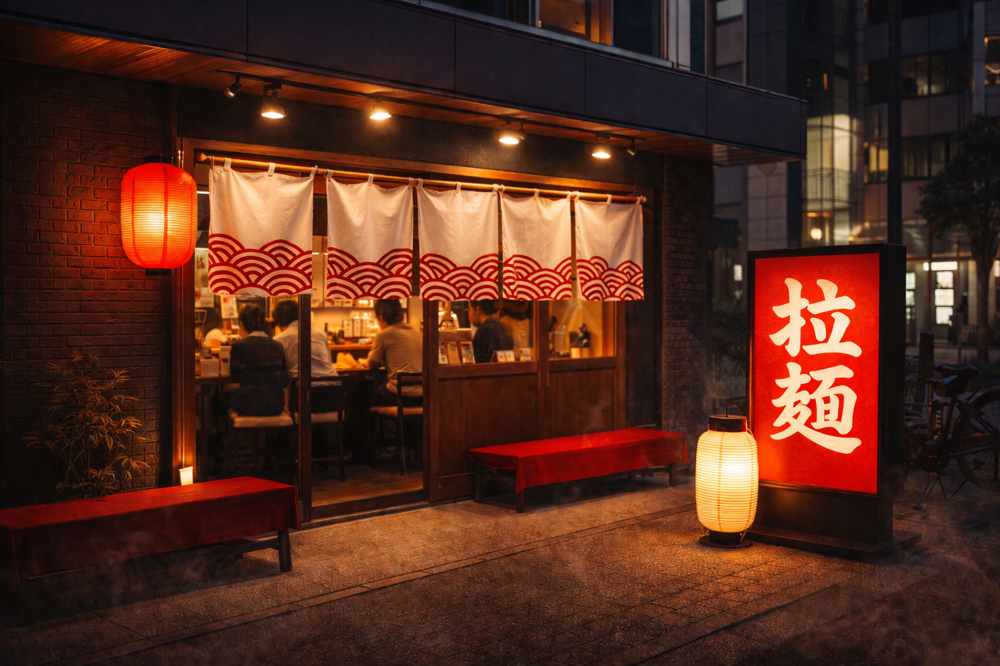

空
想
拉
麺
全国津々浦々のラーメン文化を、一つのお店で
空想拉麺は、家系・二郎系・博多とんこつ・富山ブラックなど、
日本各地で愛されてきた味を一軒で楽しめるラーメン店です。
その日の気分で、旅するようにラーメンを選ぶ。
そんな「空想だけど本気」な一杯を、心ゆくまでどうぞ。
店舗
ふらっと立ち寄れる、もうひとつの居場所。
空想拉麺は、街に根ざしたラーメン店を目指しています。
お近くの店舗情報や営業時間、アクセスはこちらからご確認ください。

店舗の詳細
| 住所 | 空想県空想市空想町1-1 |
|---|---|
| 座席数 | カウンター10席 テーブル5隻 |
| 駐車場 | あり（20台） |
| 営業日 | 年中無休 |
| 営業時間 | 11:00~23:00 |